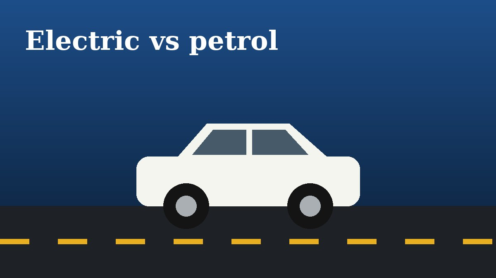
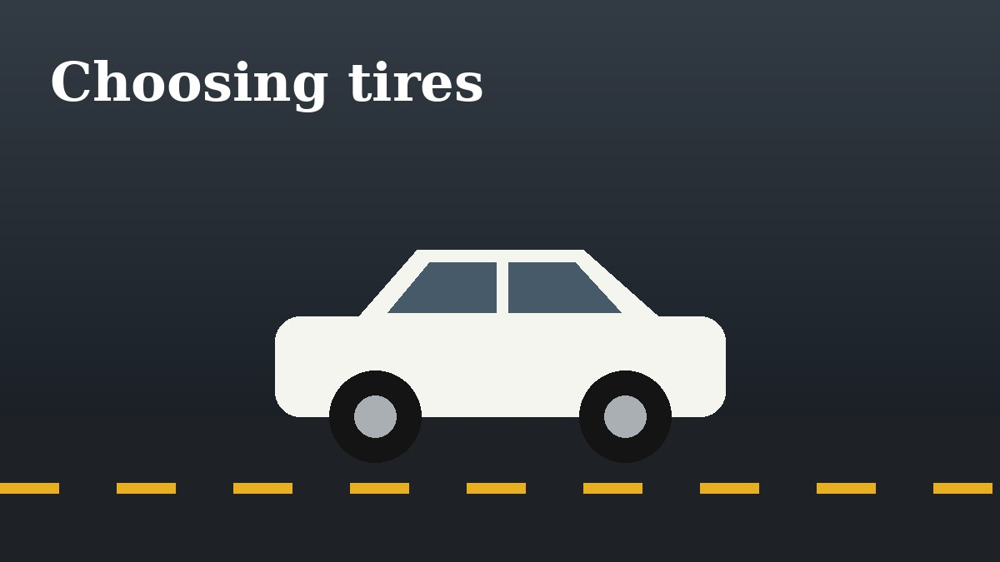
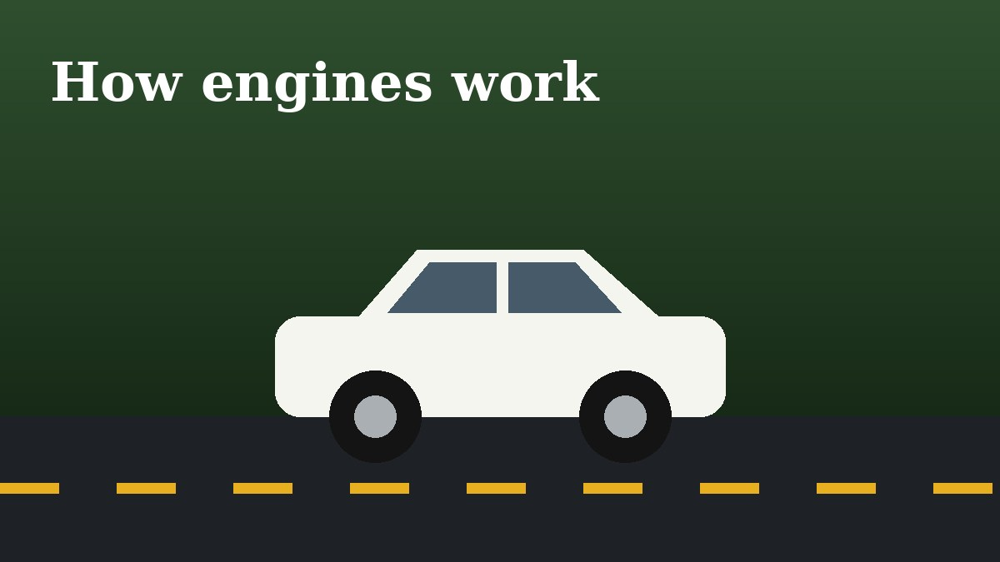
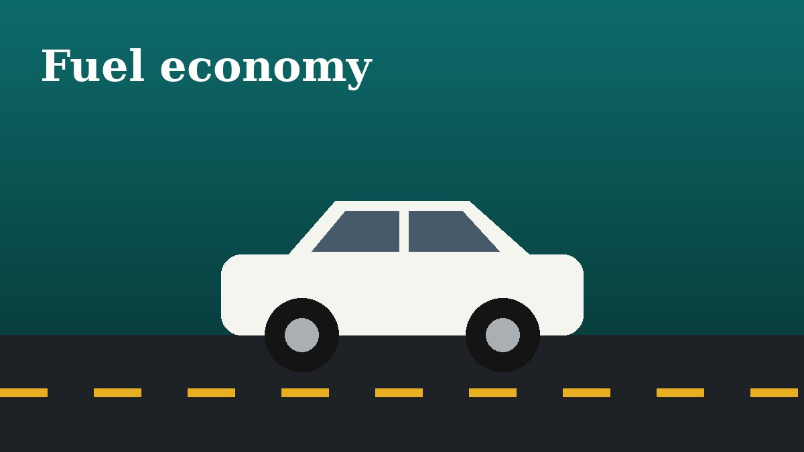
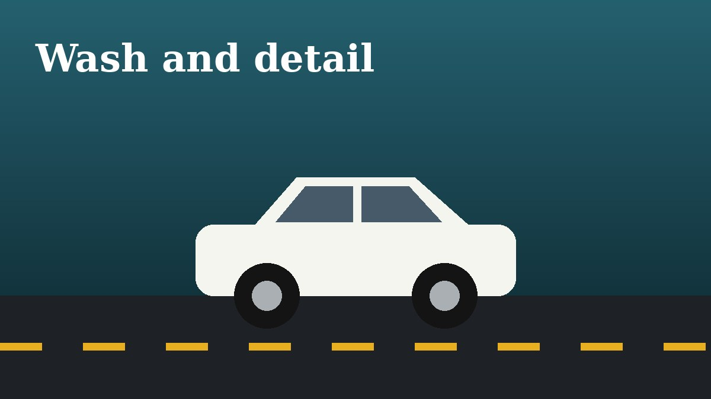

Practical car advice, written plainly
Guides on buying, maintaining and enjoying cars, from used car checks to road trips.

How to Check a Used Car Before You Buy It
A practical walkthrough of inspecting a used car: paperwork, bodywork, engine bay, tires and a proper test drive.

Electric vs Petrol: Real Cost of Ownership
Comparing what an electric car and a petrol car actually cost over five years, including fuel, servicing and depreciation.

A Beginner's Guide to Basic Car Maintenance
The simple checks every driver can do at home: oil, coolant, tire pressure, lights and wipers.

Best Road Trips in India for Car Lovers
Six drives across India with great roads, scenery and enough variety to make every kilometre worth it.

How to Choose the Right Tires for Your Car
Learn to read tire sizes, pick between summer, all-season and all-terrain tires, and know when to replace them.
A Short History of the Hot Hatch
How small family hatchbacks became fast, fun cars, from the first GTIs to modern performance models.

How Car Engines Work, Explained Simply
A plain-language look at the four-stroke cycle, turbochargers and why engines need oil and coolant.

10 Tips for Better Fuel Economy
Simple driving and maintenance habits that reduce fuel use without slowing you down much.
Car Safety Features That Actually Matter
Which safety systems are worth paying for, from airbags and ABS to automatic emergency braking.

How to Wash and Detail Your Car at Home
A step-by-step method for washing, drying and protecting paint without scratches.